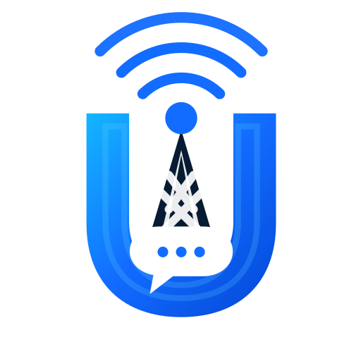

UplinkIRC How-To Guide Everything from installation to tweaks, step by step.

What is UplinkIRC?
UplinkIRC is a fast, secure IRC chat client built with Qt6 and C++17. It connects over TLS (encrypted) by default, supports IRCv3 features like chat history, typing indicators, and SASL authentication, and ships with 55 built-in color themes. The default server is irc.linuxdojo.org:6697, channel #uplink.
It runs on Linux, macOS, Windows, and FreeBSD.
#), and chat with other people. UplinkIRC handles all the protocol details — you just type.
Download (pre-built binaries)
The easiest way to get started is to download a pre-built release. No compiler needed.
| Platform | Download | How to run |
|---|---|---|
| Linux x86_64 (AppImage) | Latest release ↗ | chmod +x UplinkIRC-*.AppImage && ./UplinkIRC-*.AppImage |
| Linux x86_64 (tar.gz) | Latest release ↗ | Extract the .tar.gz, run ./UplinkIRC |
| Windows x64 | Latest release ↗ | Extract the .zip, double-click UplinkIRC.exe |
| macOS arm64 | Latest release ↗ | Open the .dmg, drag UplinkIRC to Applications |
| FreeBSD | Build from source (see below) | ./UplinkIRC |
AppImage — run anywhere, update in-place
The AppImage bundles UplinkIRC and its Qt libraries into a single executable file. It runs on any modern x86_64 Linux with glibc 2.35+ — no package manager, no Qt install needed.
Run it
chmod +x UplinkIRC-*.AppImage ./UplinkIRC-*.AppImage
Update in-place (zsync)
The AppImage embeds zsync metadata pointing to the latest release. Install appimageupdatetool, then:
appimageupdatetool ./UplinkIRC-0.9.2-x86_64.AppImage
Only the changed blocks are downloaded — much faster than a full re-download.
~/bin/ or ~/.local/bin/ and it will appear in your application launcher if your desktop environment supports AppImage integration (most do with libappindicator installed).
Install dependencies
If you're building from source, install these packages first. If you downloaded a pre-built binary, skip this section.
sudo pacman -S qt6-base qt6-svg cmake tomlplusplus
sudo apt install cmake qt6-base-dev libqt6svg6-dev libtomlplusplus-dev
sudo dnf install cmake qt6-qtbase-devel qt6-qtsvg-devel tomlplusplus-devel
sudo pkg install cmake qt6-base qt6-svg tomlplusplus
brew install cmake qt tomlplusplus
Then set Qt in your PATH: export PATH="$(brew --prefix qt)/bin:$PATH"
Install Qt 6 via the Qt Online Installer (select Qt 6.x → MSVC 2022 x64 or MinGW). Install CMake from cmake.org. tomlplusplus is fetched automatically by CMake if not found.
Build from source
Three commands. CMake downloads tomlplusplus automatically if your package manager doesn't have it.
git clone https://github.com/joehonkey/UplinkIRC.git cd UplinkIRC cmake -B build -DCMAKE_BUILD_TYPE=Release cmake --build build
The binary is at build/UplinkIRC (or build\UplinkIRC.exe on Windows). Run it from there — the themes/ folder is copied next to the binary automatically.
cmake --install build to produce a proper .app bundle, or launch build/UplinkIRC.app/Contents/MacOS/UplinkIRC directly.
First launch
On the very first run, UplinkIRC creates your config file and may show a nick dialog asking for your nickname. Type the name you want to use on IRC and click OK.
The app then connects to irc.linuxdojo.org and joins #uplink automatically. You'll see the server list on the left, the chat area in the middle, and the user list on the right.
To open the hamburger menu (the ☰ button in the top-left), click it to reach Preferences, Documentation, and other settings.
yournick. Click ☰ → Open Config, set nick = "yournick" to your actual nick, save, and click ☰ → Reload Config.
Config file location
All settings live in a single config.toml file. UplinkIRC creates it automatically on first launch.
| Platform | Path |
|---|---|
| Linux / FreeBSD | ~/.config/LinuxDojo/UplinkIRC/config.toml |
| macOS | ~/Library/Application Support/LinuxDojo/UplinkIRC/config.toml |
| Windows | %APPDATA%\LinuxDojo\UplinkIRC\config.toml |
Edit the file in any text editor. To apply changes without restarting, click ☰ → Reload Config. You can also click ☰ → Open Config to open the file in your system editor directly from UplinkIRC.
Set your nickname
Open config.toml and change the nick field in your server block:
[[server]]
name = "LinuxDojo"
host = "irc.linuxdojo.org"
port = 6697
ssl = true
nick = "alice" # ← change this to your nick
user = "uplink"
realname = "UplinkIRC User"
channels = "#uplink"
Save, then click ☰ → Reload Config. The new nick takes effect on the next connect. To change your nick while already connected, type /nick yournewnick in the input box.
Connect to LinuxDojo
LinuxDojo is the default server. You only need to set your nickname — everything else is already configured.
[[server]] name = "LinuxDojo" host = "irc.linuxdojo.org" port = 6697 ssl = true nick = "alice" user = "uplink" realname = "UplinkIRC User" channels = "#uplink"
Click ☰ → Reload Config, or restart UplinkIRC. The server appears in the sidebar and connects automatically.
Connect to any IRC server
Add a [[server]] block for every server you want to connect to. The double brackets ([[]]) mean "add another entry to the list" — this is standard TOML array-of-tables syntax.
[[server]] name = "Libera.Chat" host = "irc.libera.chat" port = 6697 ssl = true nick = "alice" user = "uplink" realname = "UplinkIRC User" channels = "#linux, #archlinux"
ssl = true. UplinkIRC does not support plain-text IRC connections — TLS is required.
Common IRC networks and their TLS hostnames:
| Network | Host | Port |
|---|---|---|
| LinuxDojo | irc.linuxdojo.org | 6697 |
| Libera.Chat | irc.libera.chat | 6697 |
| OFTC | irc.oftc.net | 6697 |
| EFnet | irc.efnet.org | 6697 |
| IRCnet | open.ircnet.net | 6697 |
Auto-join channels
Set the channels key in a server block to a comma-separated list. UplinkIRC joins them all automatically on connect.
[[server]] name = "Libera.Chat" host = "irc.libera.chat" port = 6697 ssl = true nick = "alice" user = "uplink" realname = "UplinkIRC User" channels = "#linux, #archlinux, #python" # join all three on connect
You can also set channels from the GUI: click ☰ → Preferences → Manage Servers → Edit and fill in the Auto-join field.
To join a channel while connected without editing the config, type /join #channelname in the input box.
NickServ auto-identify
If you have a registered nick on a server, add nickserv_password. UplinkIRC sends PRIVMSG NickServ :IDENTIFY yourpassword automatically after connecting.
[[server]] name = "LinuxDojo" host = "irc.linuxdojo.org" port = 6697 ssl = true nick = "alice" user = "uplink" realname = "UplinkIRC User" channels = "#uplink" nickserv_password = "mysecretpassword" # ← add this
The server buffer shows Sent NickServ IDENTIFY when it fires. For networks that support SASL, use that instead (below) — SASL identifies you before you even appear on the network.
SASL PLAIN authentication
SASL is the preferred way to authenticate on Libera.Chat, OFTC, and other modern IRC networks. It logs you in during the connection handshake, before you appear to other users.
[[server]] name = "Libera.Chat" host = "irc.libera.chat" port = 6697 ssl = true nick = "alice" user = "uplink" realname = "UplinkIRC User" channels = "#linux" sasl_user = "alice" # ← your registered nick sasl_password = "mysecretpassword" # ← your NickServ password
The server buffer shows SASL authentication successful on connect. If it fails, the connection continues — you'll just appear without services authentication.
nickserv_password for servers that don't (LinuxDojo, older networks).
SASL EXTERNAL (certificate authentication)
SASL EXTERNAL authenticates you by your TLS client certificate instead of a password. The server derives your identity from the certificate's fingerprint — nothing is ever typed or transmitted. Supported on Libera.Chat, OFTC, and most modern IRC servers.
1. Generate a client certificate
# RSA (most compatible) openssl req -newkey rsa:4096 -nodes -x509 -days 3650 \ -keyout ~/.irc/client.key -out ~/.irc/client.crt \ -subj "/CN=yournick" # EC (smaller, equally secure) openssl req -newkey ec -pkeyopt ec_paramgen_curve:P-384 -nodes -x509 -days 3650 \ -keyout ~/.irc/client.key -out ~/.irc/client.crt \ -subj "/CN=yournick"
2. Register the fingerprint with NickServ
Connect once with your password, then add the certificate fingerprint:
/msg NickServ cert add
The server extracts the fingerprint automatically from your certificate.
3. Configure UplinkIRC
[[server]] name = "Libera.Chat" host = "irc.libera.chat" port = 6697 ssl = true nick = "alice" user = "uplink" realname = "UplinkIRC User" channels = "#linux" sasl_external = true client_cert = "/home/alice/.irc/client.crt" client_key = "/home/alice/.irc/client.key"
UplinkIRC loads the certificate before the TLS handshake, negotiates AUTHENTICATE EXTERNAL, and sends an empty response. Both RSA and EC (ECDSA) PEM keys are supported.
You can also set the cert and key paths from the Server dialog: ☰ → Preferences → Manage Servers → Edit, then tick SASL EXTERNAL and browse to your files.
sasl_user / sasl_password alongside sasl_external — only one SASL mechanism is used per connection.
Two servers at the same time
Add one [[server]] block per server. UplinkIRC connects to all of them on launch and shows each one in the sidebar independently.
[ui] theme = "catppuccin-mocha" [[server]] name = "LinuxDojo" host = "irc.linuxdojo.org" port = 6697 ssl = true nick = "alice" user = "uplink" realname = "UplinkIRC User" channels = "#uplink" [[server]] name = "Libera.Chat" host = "irc.libera.chat" port = 6697 ssl = true nick = "alice" user = "uplink" realname = "UplinkIRC User" channels = "#linux, #archlinux" sasl_user = "alice" sasl_password = "mysecretpassword"
Each server's channels appear under its heading in the sidebar. Click any channel to switch to it.
ZNC bouncer
A bouncer keeps you connected to IRC 24/7 and replays missed messages when you reconnect. Set bouncer = "znc" to activate ZNC-specific features like playback and self-message echo.
ZNC expects the password in username/network:password format, passed as the connection password:
[[server]] name = "ZNC → Libera" host = "znc.example.com" # your ZNC host port = 6697 ssl = true nick = "alice" user = "uplink" realname = "UplinkIRC User" password = "alice/libera:myzncpassword" # username/network:password bouncer = "znc" channels = "#linux, #archlinux"
With bouncer = "znc", UplinkIRC negotiates znc.in/playback and requests all missed messages after connecting. Messages you sent from other IRC clients are echoed back via znc.in/self-message.
If your ZNC carries multiple networks, add one block per network — just change the network name in the password:
[[server]] name = "ZNC → OFTC" host = "znc.example.com" port = 6697 ssl = true nick = "alice" user = "uplink" realname = "UplinkIRC User" password = "alice/oftc:myzncpassword" # different network bouncer = "znc" channels = "#debian"
soju bouncer
soju is a modern IRC bouncer with excellent IRCv3 support. Set bouncer = "soju". The password is username:password. If your soju instance manages more than one IRC network, use bouncer_network to pick one.
[[server]] name = "soju → Libera" host = "soju.example.com" port = 6697 ssl = true nick = "alice" user = "uplink" realname = "UplinkIRC User" password = "alice:mysojupassword" # username:password bouncer = "soju" bouncer_network = "libera" # omit if only one network channels = "#linux"
With bouncer = "soju", UplinkIRC negotiates soju.im/bouncer-networks (lists your networks in the server buffer), soju.im/read (syncs your read position across all connected clients), and requests chat history on each join.
chathistory CAP). UplinkIRC requests the last 100 messages for each channel on join. History messages appear at reduced opacity with their original timestamps so you can tell them apart from live messages.
The topic bar
The bar across the very top of the window is the topic bar. It spans the full window width.
- Left side — always shows the
☰hamburger menu and the⚙gear. These are always visible regardless of sidebar state. - Right side — shows the signal bars, current channel name, channel modes, and user count.
☰ Hamburger — opens a menu with: About, Documentation, Preferences, Open Config, Reload Config.
⚙ Gear (left) — collapses or expands the server/channel sidebar below it. The gear and hamburger stay pinned — only the list underneath disappears.
Chat area
The large center panel is the chat area. Messages appear in reverse-chronological order (newest at the bottom). History messages replayed by your bouncer or server appear dimmed at the top with their original timestamps.
- Click any URL to open it in your browser.
- When a URL is posted, UplinkIRC fetches a preview card (title + thumbnail) automatically.
- When someone mentions your nick, it is highlighted in red and bold.
- A transparent "nick is typing…" line appears at the bottom of the chat when someone with IRCv3 typing support is composing a message.
Nick list panel
The user list sits in a panel on the right side of the chat. The header shows a ⚙ gear and the user count.
- Click the
⚙gear to collapse or expand the panel. The gear animates a full spin before toggling. - Drag the divider between the chat and the nick panel to resize it — width is saved.
- Nicks are sorted by prefix rank:
~owner,&admin,@op,%halfop,+voice, then alphabetical. - Nicks with
+B(bot mode) show a bot indicator (🤖 or 👾). - Right-click any nick for options: Message, Whois, Give Op, Give Voice, Version.
Signal bars
Four stair-step bars appear in the topic bar, showing your connection quality to the current server.
| Appearance | Meaning |
|---|---|
| 4 solid green bars | Connected, ping < 50 ms (excellent) |
| 3 solid green bars | Connected, ping 50–150 ms (good) |
| 2 solid green bars | Connected, ping 150–300 ms (fair) |
| 1 solid green bar | Connected, ping > 300 ms (slow) |
| Blue flashing | Connecting or reconnecting |
| Red flashing | Disconnected |
UplinkIRC sends a PING every 30 seconds and measures the round-trip time. The bar count updates automatically.
System tray
Closing the window minimizes UplinkIRC to the system tray — it keeps running in the background.
- Left-click the tray icon to show or hide the window.
- Right-click for a menu with Show and Quit.
- A green dot on the tray icon means you have an unread mention or PM and the window is not focused. It clears when you focus the window.
- A red dot means there are unread messages in any channel.
To control the notification dot, go to ☰ → Preferences → Desktop Notifications, or set in config:
notifications = true # green dot on tray for mentions/PMs
Sending messages
Click on a channel in the sidebar to make it active. Type your message in the input box at the bottom and press Enter to send.
To perform an action (like * alice waves), use /me:
/me waves at everyone
Slash commands
Type a / to start a command. Tab-completion works on command names too — type /p and press Tab to cycle through /part, /ping, etc.
| Command | What it does | Example |
|---|---|---|
/join #channel | Join a channel | /join #linux |
/part [reason] | Leave the current channel | /part goodbye |
/nick newnick | Change your nickname | /nick alice_ |
/me action | CTCP action | /me waves |
/msg nick text | Send a private message | /msg bob hey there |
/topic text | Set the channel topic (requires op) | /topic Welcome! |
/kick nick reason | Kick a user (requires op) | /kick bob bye |
/op nick | Give someone channel op | /op bob |
/voice nick | Give someone voice | /voice carol |
/ban mask | Ban a hostmask | /ban *!*@badhost.net |
/ping nick | Measure round-trip time to a nick | /ping bob |
/whois nick | Look up a nick's info | /whois bob |
/away message | Set yourself away | /away at lunch |
/back | Clear your away status | /back |
/clear | Clear the chat buffer | /clear |
/quote raw line | Send a raw IRC line | /quote PRIVMSG #test :hi |
/quit [message] | Disconnect | /quit see ya |
/sysinfo | Post OS/CPU/RAM info to channel | /sysinfo |
/help | List all commands | /help |
Private messages
Use /msg nick message to send a PM. A new buffer for that person appears in the sidebar. Incoming PMs also open their own buffer automatically.
You can also right-click a nick in the user list and choose Message to open the buffer without typing a command.
/msg bob hey, are you around?
IRC colors and formatting
UplinkIRC renders all standard IRC formatting codes in received messages:
| Code | Effect |
|---|---|
| Ctrl+B (bold marker) | Bold text |
| Ctrl+I | Italic text |
| Ctrl+U | Underline text |
| Ctrl+S | |
| IRC color codes (03xx) | 16 foreground + background colors |
Most IRC clients let you insert formatting codes by pressing the key combinations above in the input box. UplinkIRC displays whatever formatting codes come through from the server.
Emoji and shortcodes
There are three ways to use emoji in UplinkIRC:
1. Type a shortcode — inline autocomplete
Start typing : followed by the emoji name. A completion list pops up:
:fire → shows completion list: 🔥 fire, ... :thumbs → shows: 👍 thumbsup, 👎 thumbsdown, ...
Navigate with ↑ / ↓, select with Enter or Tab, dismiss with Escape.
2. Type a full shortcode — instant substitution
Type the opening colon, the name, and the closing colon. The emoji replaces it instantly:
:trident: → 🔱 (substituted as you type the closing colon) :joy: → 😂 :100: → 💯
3. Emoji picker button
Enable the button in config or Preferences, then click 😊 to open a searchable grid of ~400 emoji.
[ui] show_emoji_button = true
Tab completion
Press Tab to complete nicknames and slash commands.
- Type the first few letters of a nick and press Tab. If there's one match, it fills in immediately. If there are several, pressing Tab again cycles through them.
- Works for commands too — type
/joand press Tab to get/join. - At the start of a line, the completed nick gets a colon appended:
alice:(the IRC convention for addressing someone).
al[Tab] → alice: (if alice is in the channel) /p[Tab] → /part (or cycles /part → /ping → /privmsg)
Input history
Press ↑ in the input box to scroll back through messages you've sent in this session. Press ↓ to go forward again. The history is per-session and is not saved to disk.
Link previews
When a message contains a URL, UplinkIRC fetches a small preview card automatically and appends it below the message:
- Web pages — shows the page title (from
og:titleor<title>) and a thumbnail if an Open Graph image is set. - Direct image links —
.png .jpg .jpeg .gif .webpURLs are detected and shown as a thumbnail without any HTML parsing.
Previews are lightweight — HTML is capped at 32 KB, images at 200 KB, results are cached for the session.
DCC file transfer
DCC (Direct Client-to-Client) lets you send files directly to another user without going through the IRC server.
Sending a file
Receiving a file
When someone sends you a file, an accept/reject dialog appears showing the filename and size. If you accept, you're asked where to save it. A live progress dialog shows transfer status with a Cancel button.
Timeouts
- Sender side: 60 seconds to receive an incoming connection before the offer is cancelled.
- Receiver side: 30 seconds to connect to the sender before giving up.
Picking a theme
UplinkIRC ships with 55 built-in color themes. The fastest way is to try them live:
config.toml. Click the theme button again to collapse the list.Or set it directly in the config:
[ui] theme = "catppuccin-mocha"
Popular choices:
| Name | Style |
|---|---|
catppuccin-mocha | Dark, muted purple — the fan favourite |
catppuccin-latte | Light, warm pastels |
nord | Cool blue Arctic palette |
dracula | Dark purple and pink |
gruvbox-dark | Warm retro dark theme |
tokyo-night | Dark Tokyo Night |
solarized-dark | Classic Solarized dark |
one-dark | Atom One Dark |
default | Native OS look (best on Windows) |
.toml file into ~/.config/LinuxDojo/UplinkIRC/themes/ and it appears in the list on next launch. The format matches the shipped themes in the themes/ folder.
Font sizes
Every part of the UI has its own independent font size. Go to ☰ → Preferences → Font Config... and drag the sliders, or set them in config:
[ui] font_family = "IBM Plex Mono" # any installed monospace font # Each zone is independently sized (all in points) font_chat = 11 # message area font_sidebar = 10 # server/channel list font_nick_list= 10 # user list on the right font_input = 11 # message input box font_topic_bar= 10 # topic bar at the top font_typing = 9 # "nick is typing..." indicator
Changes from the Font Config dialog are applied and saved immediately — no restart needed.
Nick brackets
The characters that wrap nicks in chat messages are configurable. Set nick_brackets in [ui]:
| Value | How nicks look |
|---|---|
"<>" | <alice> hello (default) |
"[]" | [alice] hello |
"()" | (alice) hello |
"{}" | {alice} hello |
"::::" | ::alice:: hello |
"" | alice hello (no brackets) |
[ui] nick_brackets = "[]" # square brackets
You can also change this live from ☰ → Preferences → Nick Brackets.
Show and hide panels
Sidebar (server/channel list)
Click the ⚙ gear at the top-left of the topic bar. The sidebar collapses; the hamburger and gear stay pinned. Click again to restore.
Drag the divider between the sidebar and the chat to resize it. Width is saved on quit.
Nick list (user list)
Click the ⚙ gear in the header above the user list. The gear spins, then the list collapses. The header and user count stay visible. Click again to expand.
Drag the divider between the chat and the nick panel to resize it. Width is saved on quit.
Topic display
A second text bar showing the full channel topic can be toggled:
[ui] show_topic = true # drops a topic line below the info bar
Or toggle live from ☰ → Preferences → Show Topic Bar.
Nick label in input box
[ui] show_nick_prefix = false # hides "alice ▸" next to the input
Hanging indent (word wrap alignment)
By default, when a long message wraps to the next line the wrapped text aligns under the message text rather than back at the left edge under the timestamp. This keeps the timestamp and nick visually separate from the message body.
Toggle from ☰ → Preferences → Hanging Indent (wrap under message), or in config:
[ui] hanging_indent = true # default on
Turn it off if you prefer the classic flush-left wrap style.
App icon variant
UplinkIRC ships five icon variants. Switch at runtime from ☰ → App Icon, or set in config:
[ui] app_icon = "dark" # "dark" | "light" | "light-default" | "avatar" | "mark"
| Value | Description |
|---|---|
"dark" | Dark background icon (default) |
"light-default" | Light variant, recommended for light OS themes |
"light" | Light variant, alternate style |
"avatar" | Circular avatar style |
"mark" | Minimal mark / wordless |
Desktop notifications
When your nick is mentioned or you receive a PM while the window is not focused, a green dot appears on the tray icon. It clears the moment you focus the window.
Toggle from ☰ → Preferences → Desktop Notifications, or in config:
[ui] notifications = true
Troubleshooting — Build errors
CMake can't find Qt6
If Qt is installed but CMake can't find it, pass its location explicitly:
cmake -DCMAKE_PREFIX_PATH=/path/to/Qt6 -B build
On Homebrew macOS:
cmake -DCMAKE_PREFIX_PATH=$(brew --prefix qt) -B build
tomlplusplus not found
Install the package for your platform, or let CMake fetch it automatically (it will on the first run if not found):
# Arch sudo pacman -S tomlplusplus # Ubuntu sudo apt install libtomlplusplus-dev # Fedora sudo dnf install tomlplusplus-devel # FreeBSD sudo pkg install tomlplusplus # macOS brew install tomlplusplus
Linker errors on Linux
Make sure qt6-base, qt6-svg, and the Network module are all installed and that you're linking against Qt6, not Qt5.
Troubleshooting — Config problems
TOML parse error on startup
All string values in TOML must be in double quotes. The # character starts a comment if it appears outside a string.
# Wrong — causes a parse error name = LinuxDojo # Correct name = "LinuxDojo"
Using single brackets for servers
# Wrong — defines a single table, not an array [server] name = "LinuxDojo" # Correct — double brackets = array entry [[server]] name = "LinuxDojo"
My config change isn't taking effect
Click ☰ → Reload Config. Channel list changes take effect on the next reconnect — right-click the server in the sidebar and choose Reconnect.
Troubleshooting — Nick in use
If your nick is taken, UplinkIRC appends _ and tries again (e.g. alice_). The new nick is shown next to the input box. Once the original becomes available, type:
/nick alice
If you have NickServ authentication set up, services may ghost the old connection:
/msg NickServ GHOST alice yourpassword
Troubleshooting — Theme not loading
The themes/ folder must be in the same directory as the UplinkIRC binary. If you moved the binary, copy the folder back:
cp -r themes/ /path/to/UplinkIRC/
If you built with CMake from the project root, CMake copies the themes folder automatically. Check that build/themes/ exists and contains .toml files.
Theme names are case-sensitive and must match the .toml filename exactly (without the extension):
[ui] theme = "catppuccin-mocha" # ✓ matches themes/catppuccin-mocha.toml theme = "Catppuccin-Mocha" # ✗ won't load — wrong case
Troubleshooting — Link previews
Preview didn't appear
- The site may block bots — UplinkIRC uses a standard Chrome/Linux user-agent, but some sites still block.
- The page may have no
og:titleor<title>— nothing to show. - SSL certificate errors block the fetch silently (self-signed or expired certs).
Previews disappeared when I switched channels
This was fixed in v0.8.1 — preview cards are now stored per-channel and reinjected when you switch back. If you are still seeing this, make sure you are running v0.8.1 or later.